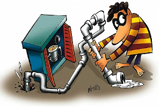
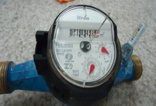
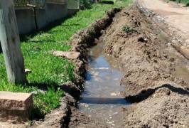
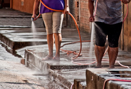

 Furto de Água Ligações de água diretas sem hidrômetro ou com bypass Visitar  Fiscalização HD Verificação das condições de leitura e funcionamento do HD Visitar  Esgoto Irregular Água pluvial na rede de esgoto ou esgoto em local impróprio Visitar  Desperdício de Água Informações sobre o combate ao mau uso de água tratada Visitar Defesa de Infração Procedimentos pós notificações ou de ocorrências irregulares Visitar